РАБОТА №7 ПРАКТИЧЕСКАЯ. УСТАНОВКА И НАСТРОЙКА СЕРВЕРА MS SQL SERVER EXPRESS
1. ЦЕЛЬ РАБОТЫ
Целью работы является получение практических навыков установки и настройки сервера баз данных.
2. ТЕОРЕТИЧЕСКИЕ ПОЛОЖЕНИЯ
MS SQL Server Express является свободно распространяемой версией сервера MS SQL Server. Отличается некоторыми ограничениями в создании и выполнении программных модулей.
Для установки MS SQL Server Express необходимо скачать и установить соответствующие программные компоненты.
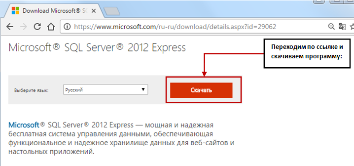
Рис.7.1 Источник для скачивания версии
При выборе файла загрузки необходимо учесть тип своей операционной системы
Для Для 32-разрядной системы: RUS\x86\SQLEXPR32_x86_RUS.exe
Для 64- разрядной системы: RUS\x64\SQLEXPR_x64_RUS.exe
Установка выполняется в виде следующих шагов.
ШАГ 1: Запуск установки
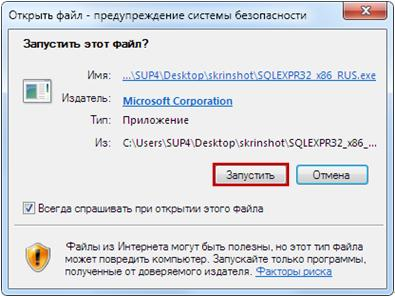
Рис.7.2 Запуск установки MS SQL Sever
ШАГ 2: Распаковка компонентов
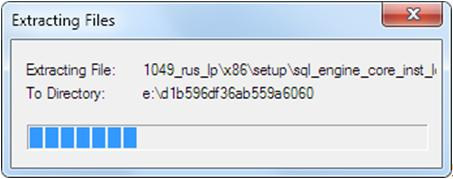
Рис.7.3 Распаковка компонентов
ШАГ 3: Выбор типа установка (обновление или установка)
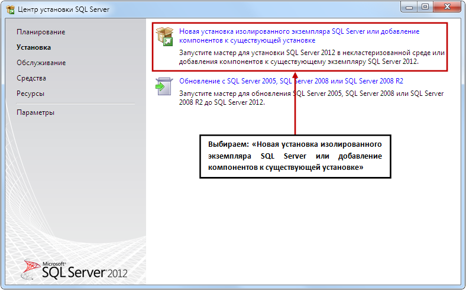
Рис.7.4 Выбор типа установки
ШАГ 4: Лицензионное соглашение
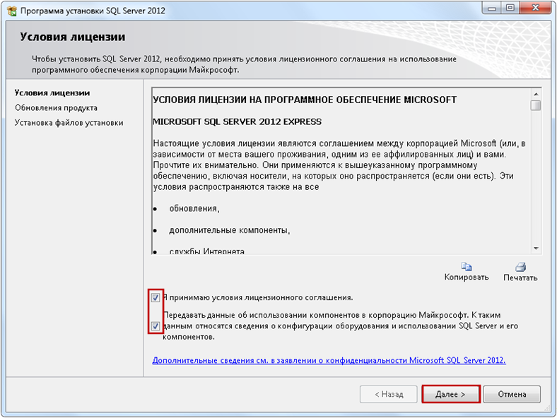
Рис.7.5 Подтверждение лицензионного соглашения
ШАГ 5: Проверка и загрузка обновления продукта
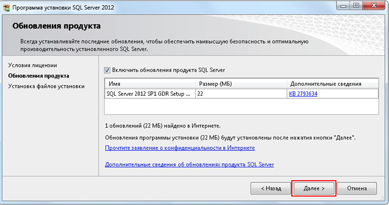
Рис.7.6 Проверка обновлений продукта
ШАГ 6: Непосредственно установка
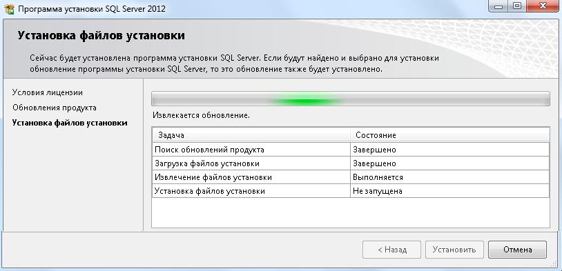
Рис.7.7 Процесс непосредственной установки
ШАГ 7: Выбор компонентов установки
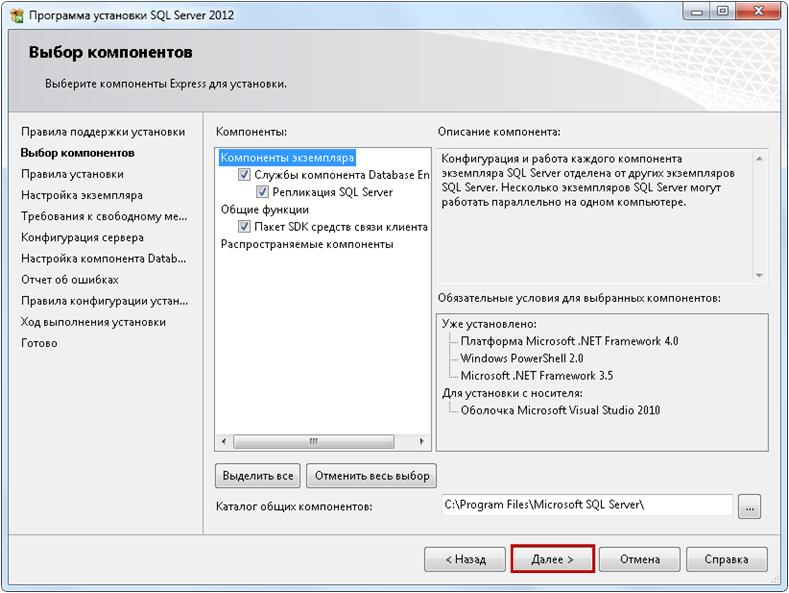
Рис.7.8 Выбор компонентов установки
ШАГ 8: Задание имени устанавливаемому серверу
При выполнении данного шага целесообразно изменить значение граф «Именованный экземпляр» и «Идентификатор экземпляра» на выбранное имя экземпляра.
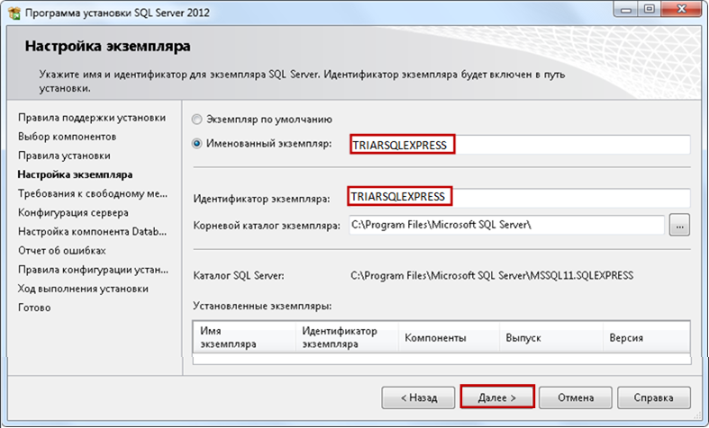
Рис.7.9 Задание имени устанавливаемому экземпляру сервера
ШАГ 9: Конфигурирование сервера
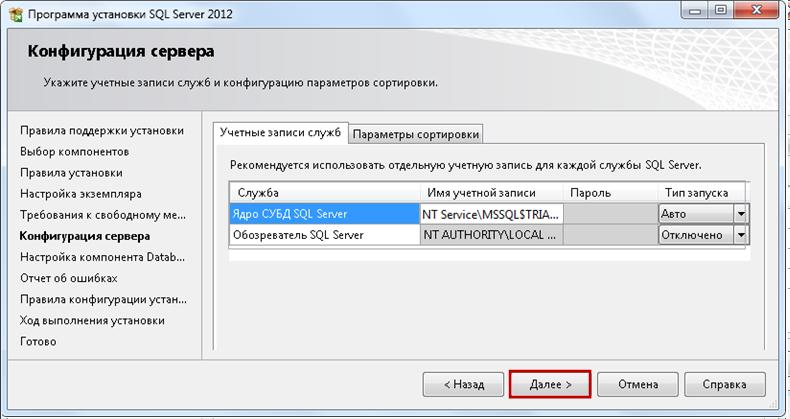
Рис.7.10 Конфигурирование сервера
ШАГ 10: Настройка компонента движка данных
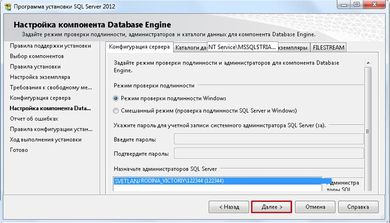
Рис.7.11 Настройка службы Database Engine
ШАГ 11: Просмотр отчѐта об ошибках
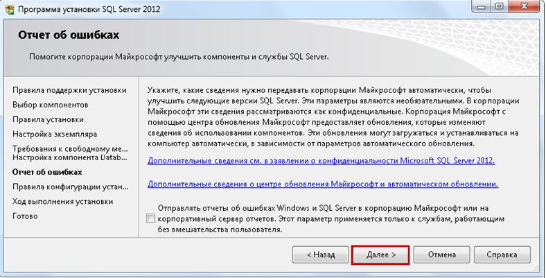
Рис.7.12 Отчѐт об ошибках
ШАГ 12: Непосредственно установка в соответствии с настройками. Создание компонентов
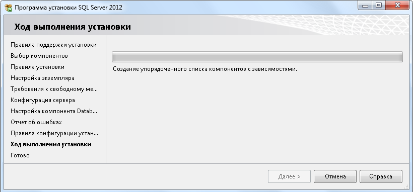
Рис.7.13 Установка. Создание устанавливаемых компонентов
ШАГ 13: Установка компонентов
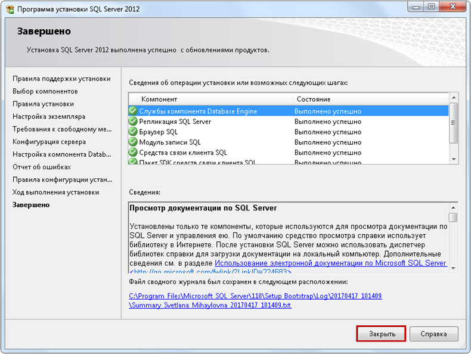
Рис.7.14 Установка компонентов
ШАГ 14: Завершение установки
Рис.7.15 Завершение установки
3. ПОРЯДОК ВЫПОЛНЕНИЯ И ЗАДАНИЯ ДЛЯ РАБОТЫ
1. Подготовить вычислительную машину для установки. Освободить при необходимости дисковое пространство.
2. Скачать необходимый файл установки.
3. Выполнить установку MS SQL Server скачанной версии.
4. КОНТРОЛЬНЫЕ ВОПРОСЫ
1. Какие версии MS SQL Server могут быть установлены?
2. Что нужно указать, для того что бы с помощью курсора можно было менять значение атрибутов отношения?
3. Какие функции расширения возможностей обработки данных поддерживают курсоры?
4. Какая последовательность действий при работе с курсором? 5. Описать синтаксис операторов используемых при работе с курсором.
6. Как контролировать работу курсора серверными перемен-ными?